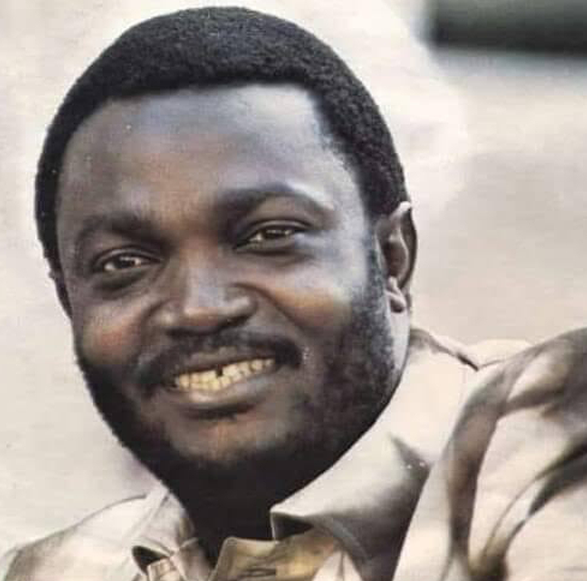
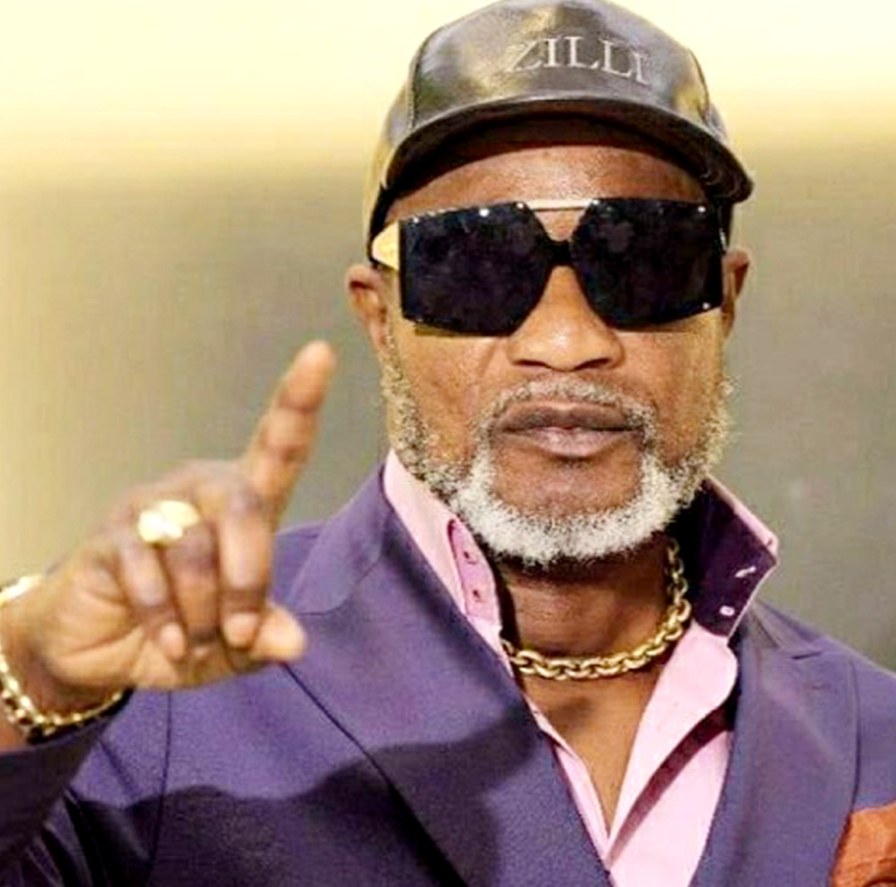
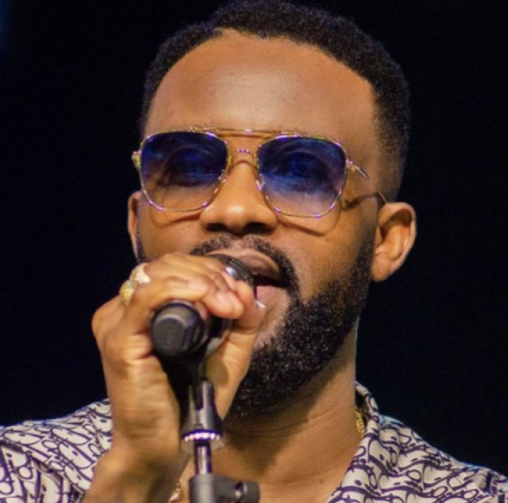

Music from the Democratic Republic of Congo
The musical history of the Democratic Republic of the Congo is vibrant, with artists who have shaped not only local sounds but also influenced global music. This month we'll delve into three iconic figures who are pillars of DRC music.
François Luambo Luanzo Makiadi (Franco)

Franco was a force to be reakon with in African music during the 20th century. As the leader of TPOK Jazz band, he mastered African Rumba, blending traditional sounds with innovative rhythms. His talent as a guitarist earned him a spot on Rolling Stone's list of the 250 Greatest Guitarists of All Time. Some of his most notable songs, like "Mario," "Massu," and "Bina na gai na Respect," continue to resonate today, showcasing his deep impact on Congolese music.
Antoine Christophe Agbepa Mumba (Koffi Olomidé)

Often referred to as the "King of Ndombolo," Koffi Olomidé is a dynamic Congolese singer-songwriter and dancer known for perfecting the Ndombolo dance. He began his career as a ghostwriter before forming his own band, Quartier Latin International. His album Haut de Gamme: Koweït, Rive Gauche is recognized as one of the essential albums to hear. Hit songs like "Papa Bonheur," "Loi," and "Héros National" have solidified his status in African music, blending traditional elements with contemporary flair.
Fally Ipupa N'simba (Fally Ipupa)

Fally Ipupa emerged from Koffi Olomidé’s Quartier Latin International and has since become a significant solo artist in the Congolese music scene. He has won several awards, including the MTV African Music Award for Best Francophone. Known for modernizing Lingala music, Fally's style combines traditional rhythms with modern influences. Notable tracks such as "Eloko Oyo, " "Mayday," and "Champ" highlight his versatility and artistry, earning him a dedicated fan base across Africa and beyond.
These three artists represent the evolution and richness of Congolese music, each contributing their unique sound and style to a vibrant musical heritage.